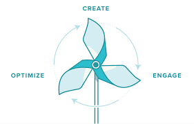

blog posts
Tudo o que você precisa saber sobre Flywheel Marketing e ninguém tinha te contado
Vivemos em um mundo de competição acirrada, o imediatismo toma conta de quase todas as esferas da nossa sociedade e no marketing digital não poderia ser diferente. Mas e se eu te dissesse que existe uma forma de marketing que, apesar de te dar um certo trabalho pode ser mais eficiente e atrair leads leais a você, aos seus conceitos ou a sua empresa? Então bem-vindos ao mundo maravilhoso do Flywheel Marketing!
Como?  Então, física básica meus amigos! Imagine uma roda, pode ser uma roda de moinho. Quando a água começa a bater para fazer a roda iniciar o seu trabalho ela começa lenta, com um esforço tenso pra que a roda comece a girar. Depois, com o aumento da velocidade e a roda já, digamos, embalada, o trabalho daquela fonte d’água fica muito mais fácil.
É assim que funciona no Flywheel Marketing.
De forma resumida podemos dizer que no início, você vai ter que derramar algumas gotas de suor, ter um trabalho mais pesado de SEO em um determinado conteúdo para conseguir ranqueamento, conseguir aqueles poucos compartilhamentos no facebook ou aquela meia dúzia de seguidores no twitter, mas uma coisa interessante acontece conforme você vai ganhando reputação, seus conteúdos vão performando e sendo bem ranqueados. A sua “roda” se mantem sozinha, com uma boa audiência e disseminação do seu conteúdo você não precisa fazer tanto esforço assim para ranquear um blog post ou para conseguir compartilhamentos no facebook, e olhe só, você tem muito mais do que aquela meia dúzia de seguidores no twitter que farão seu conteúdo ser compartilhado ainda mais!
Crescendo de forma natural? Nós sabemos que o início de qualquer coisa, nunca vai ser fácil. Numa analogia simples, um personagem de RPG sempre começa no nível 0, com magias e equipamentos básicos, apanhando para todo tipo de monstro que aparece e conforme se passam as aventuras e são feitas suas “quests”, o personagem se fortalece, passa a usar equipamentos melhores, a matar os monstros com mais facilidade e numa certa etapa alcança tal nível épico que é conhecido por todo reino, logo ele não precisa mais correr atrás das aventuras e do sucesso, o sucesso vem até ele!
Disseminar conteúdo de qualidade aliando com uma boa estratégia de SEO, guest posts, link building, materiais ricos, tudo isso fará com que a sua reputação aumente e você seja visto no meio desse mar chamado internet.
A partir daí, com uma reputação já consolidada e firme, você terá identificado quais as palavras chave, temas e conteúdos fazem parte do seu business e então o seu trabalho de SEO ficará bem mais fácil. É quase como se você alcançasse o nível épico em um RPG, só que com uma roupagem mais conectada.
Um passo de cada vez Primeiro, se você está disposto a entrar na onda do Flywheel Marketing tem de estar disposto a passar por certos riscos como por exemplo estar disposto a investir a longo prazo. As estratégias de Flywheel Marketing demandam tempo para que sejam plantadas as sementes, cultivadas e colhidos os resultados.
Como disse anteriormente o início não vai ser fácil, definir uma estratégia de SEO, construir sua reputação e a da sua página ou blog, desenvolver um conteúdo relevante e que atinja o seu público no momento que ele precisa e que seja bem ranqueado através do trafego orgânico, sabemos que isso tudo no começo é difícil e trabalhoso, mas todo esforço é bem recompensado e com o passar do tempo esse trabalho vai ficando mais fácil e é aí que você colherá os frutos de ter acreditado nesse tipo de estratégia.
Além disso uma estratégia em cima de trafego orgânico demanda tempo e estudo para que alcance o sucesso. Não acreditar nesse tipo de esforço a longo prazo, e troca-lo por um a curto prazo e de resultados rápidos, pode matar um trabalho que seria excelente para o seu negócio.
Sabemos que tudo gira em todo de resultados. É o que o dono de uma empresa espera e é o que um profissional é contratado para gerar. Mas matar uma estratégia que demanda um pouco mais de tempo por ela não gerar resultados imediatos pode ser um tiro no pé para o seu negócio.Afinal se você não acreditou naquilo, alguém vai acreditar, e tenho toda certeza de que vai dar certo, e você ficará pensando “Poderia ser eu naquele lugar...”.
Por último e não menos importante, aprenda a ver o Flywheel Marketing em tudo o que você aplica na estratégia digital da sua empresa. Veja que os trabalhos constantes e bem feitos geram resultados e bons resultados. Por exemplo, se você compartilhou conteúdo em um certo canal e funcionou, porque não começar em outro canal, ou até mesmo em vários outros canais? Pense em como isso pode se transformar em uma bola de neve positiva para o seu negócio com cada vez mais pessoas compartilhando seu conteúdo e consequentemente gerando ainda mais reputação!
Considere a fidelidade Então determinada pessoa veio, clicou no seu link, leu seu texto, não compartilhou e não voltou mais, isso de forma nenhuma é uma relação saudável. Afinal você deu a ele um conteúdo de qualidade, completo e um material rico para que ele usufruísse daquilo, o que mais você poderia fazer por ele?
Reciprocidade é extremamente importante nesse tipo de estratégia de marketing. A ideia é que seja feita uma troca e que essa troca faça a “roda” que é a estratégia de marketing da sua empresa se movimentar e acabar caminhando com suas próprias pernas.
Conseguiu entender os conceitos básicos de Flywheel Marketing? Então inscrevase em nossa newsletter, e te avisamos por email sempre que algo novo sair por aqui!